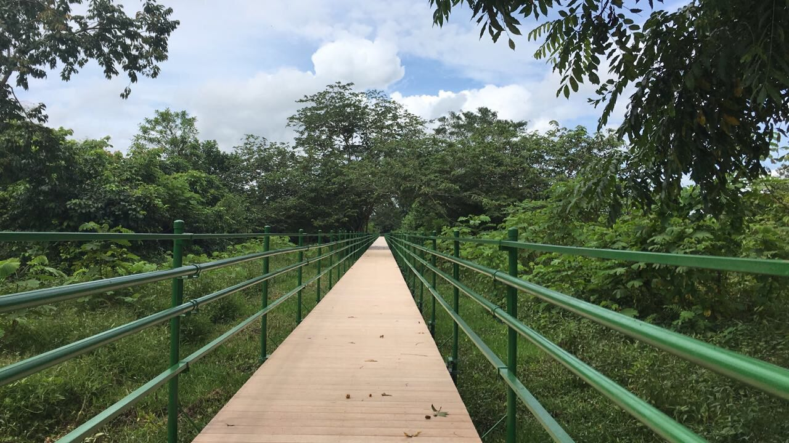
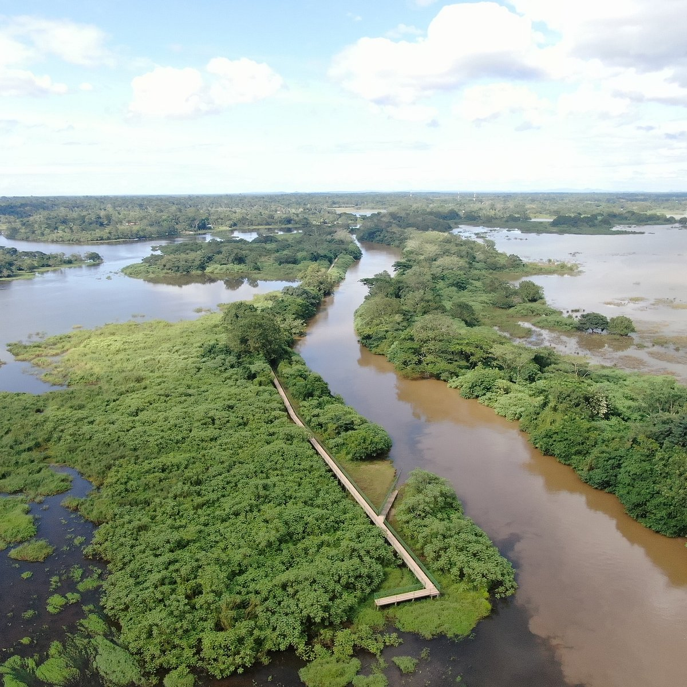

Naturaleza, senderismo y conservación
Recorre senderos rodeados de bosque, humedales y vida silvestre, en un entorno donde cada paso invita a descubrir la riqueza natural de Caño Negro.
Antes de iniciar tu recorrido, toma en cuenta algunas recomendaciones para disfrutar de una experiencia segura, consciente y respetuosa con la naturaleza.
Utiliza calzado cómodo, lleva agua, protector solar y ropa adecuada para caminar en un entorno natural.
Respeta la flora y la fauna, no dejes residuos y ayuda a proteger el equilibrio del ecosistema.
Lleva cámara o binoculares para disfrutar mejor del paisaje, las aves y los detalles del entorno.
Cada sendero ofrece una experiencia distinta, conectando a los visitantes con paisajes, humedales, bosques y una biodiversidad única.

BosqueRecorrido de 2 km rodeado de bosque primario, vegetación abundante y miradores naturales ideales para contemplar el paisaje.
1.5 horas
HumedalIdeal para la observación de aves, fotografía natural y una experiencia tranquila en uno de los ecosistemas más valiosos de la zona.
2 horasCaño Negro
Caminar por estos espacios permite descubrir la vida que habita en cada rincón, valorar la biodiversidad y fortalecer el compromiso con su protección.